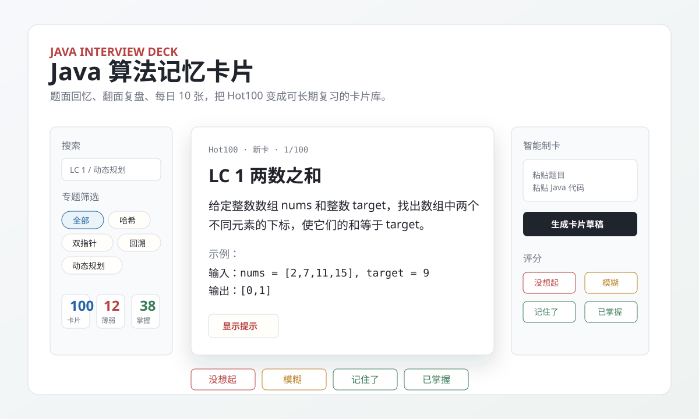

Hot100 内置卡池
题面、示例、Java 解法、复杂度和详细复盘都已内置，打开就能开始复习。
Java interview deck
一个本地优先的 Anki 式复习工具：既能回顾算法题，也能沉淀 Agent、MySQL、计算机网络和 Spring Boot 等八股知识。

为什么做这个工具
它适合 Java 后端算法面试、LeetCode Hot100 系统复习、代码随想录专题复盘，以及把错题沉淀成本地知识库。 公开网页可以直接阅读和复习；DeepSeek 智能制卡仍需要克隆项目并在本地配置 API Key。
题面、示例、Java 解法、复杂度和详细复盘都已内置，打开就能开始复习。
题面回忆、隐藏提示、翻面看答案，再用“没想起/模糊/记住了/已掌握”评分。
每天抽 10 张，不重复抽完整个卡池；薄弱卡优先，已掌握卡自动后移。
使用本地 Prism 风格高亮，不依赖外部 CDN，GitHub Pages 和本地都能稳定显示。
支持新增、编辑、删除、恢复内置卡片，以及导入导出卡片和复习进度。
本地服务读取 `.env` 中的 API Key，把题目和 Java 代码生成可手动修改的卡片草稿。
启动方式
https://for5634.github.io/java-algorithm-memory-cards/app.html
node server.js
http://localhost:8787/app.html